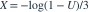
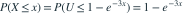

，令
，令 
。则X的分布与均值为？- A速率3的指数分布，均值1/3
- B速率1/3的指数分布，均值3
- C均匀分布，均值1/2
- D标准正态分布，均值0
我已思考，展开答案与解析
正确答案：A
- x≥0时，

。 - 识别为速率3的指数分布，均值1/3。
易错提醒指数分布的速率在指数前相乘，期望是速率的倒数。
Ross · 概率模型专题 · Ross第11.2.1节 The Inverse Transformation Method
按Ross教材公开目录所列知识主题原创；未逐字摘录原书习题。
查看参考来源